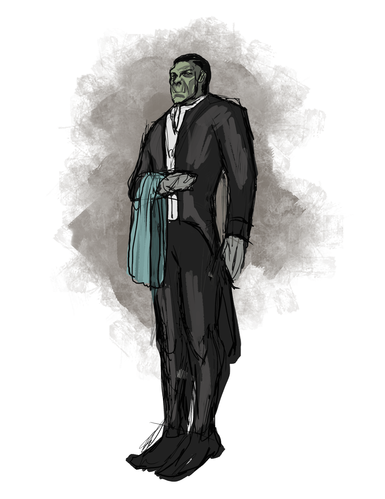

Beach
late middle age desert orc
lawful neutral
Level 5 assassin
Pronouns:
he/him
Occupations:
Butler
Armor Class
14
Hit Points
23 (TODO Hitdice)
Speed
30.
STR
14 ()
DEX
17
CON
11
INT
13
WIS
12
CHA
13
Saving Throws
TODO Saving Throws
Skills
Alchemy; Cooking; Poisoner's Kit; Disguise Kit;
Proficiencies
TODO
Damage Immunities
TODO Damage Immunities
Condition Immunities
TODO Condition Immunities
Senses
TODO Senses
Languages
Humam dwarvish orcish ,
Adjectives
Servile ,
Special Abilities
- Sneak Attack, Assassinate; | Uncanny Dodge; | Cunning Action
Special Equipment
- Burleigh and Stronginthearm Number IX
- a +3 precise crossbow; only 2 were ever made.
Combat Tactics
If combat erupts, Beach appears to flee but instead is actually finding the best shadows from which to strike.
Actions
Assassin's Dagger (+1); When Beach Hits a creature that is surprised with this dagger, target must make a DC 18 CON throw or take 4d6 necrotic damage; | Hidden Blade (1d4 piercing, finesse)
Factions
